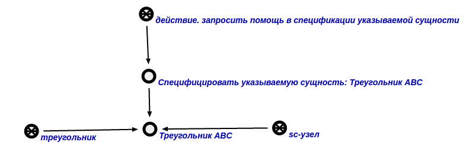
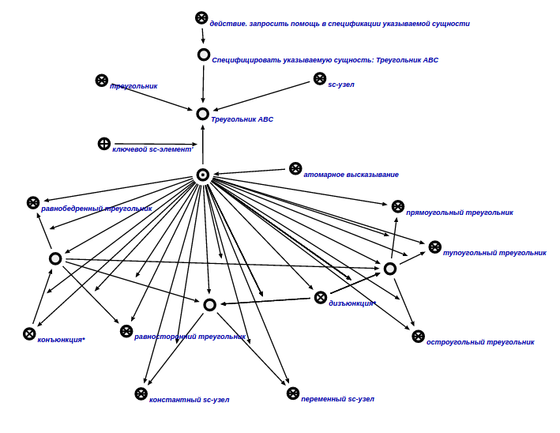

Команда спецификации указываемой сущности предназначена для спецификации указываемой сущности. Единственным входным аргументом команды является сущность, которую требуется специфицировать. Результатом выполнения команды является специфицированная сущность. Входной аргумент и результат выполнения команды показан ниже:

Рис 1. Входной аргумент

Рис 2. Результат выполнения команды